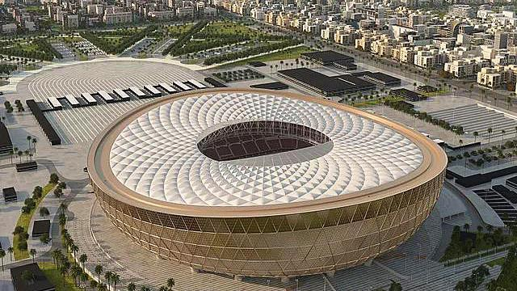
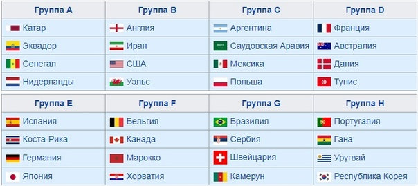
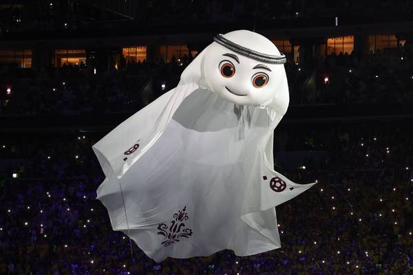
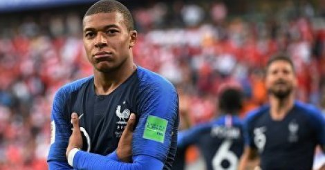

Основная Информация
ЧМ - 2022 впервые в своей истории пройдет осенью
и зимой (с 21 ноября по 18 декабря 2022 года).
Кроме того, 22-ой чемпионат мира впервые
будет разыгран на Ближнем Востоке. Это последний
ЧМ по футболу ФИФА с 32 командами - с 2026 года
состав участников будет увеличен до 48 команд.
Логотипом ЧМ-2022 является лента, символизирующая
бесконечность и гармонию, а также форму песчаных дюн.
На ленте изображены традиционные арабские орнаменты.
Сборная Катара впервые в своей истории примет участие
в финальной стадии чемпионата мира. Государство
квалифицировалось автоматически как организатор турнира.

Самый большой стадион ЧМ - "Lusail stadium"

Состав групп на ЧМ-2022

Талисман ЧМ - ковер-самолет по имени Лаиб

Главный бомбардир ЧМ Килиан Мбаппе